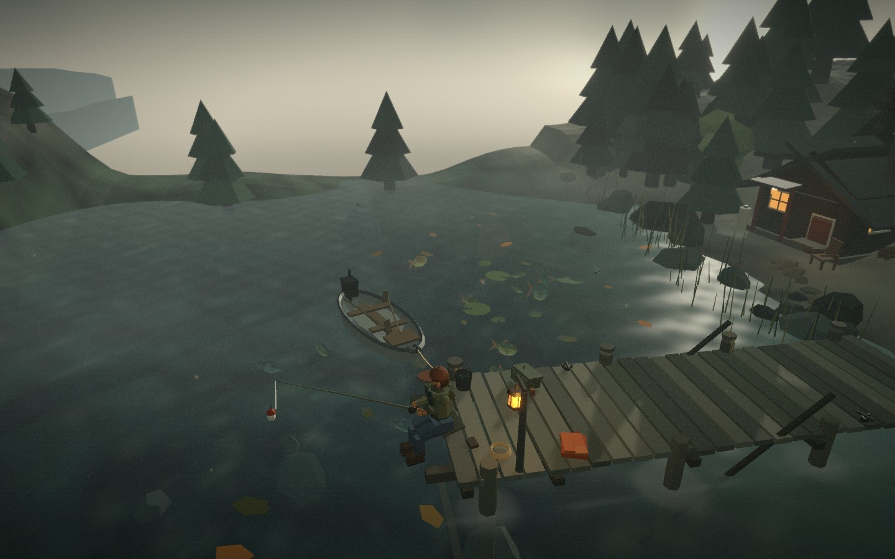

Product engineer · Toronto, Ontario
I build software that earns its place in the workflow.
Founder of Coach AIST. Junior Software Developer at OES. I build product interfaces, cross-platform apps, and the tools that connect them.
Off the clock, you'll find me here.
View selected work ↓
About
I build software that has to work on game day.
Product engineer in Toronto. I build Coach AIST and ship scoreboard and hardware tools at OES. The work has to hold up in a gym, on a bench, and when the clock is running.
Basketball at Western shaped how I work: prepare early, take coaching, and make the next play.
Selected work
OES · internal product
Scoreboard Configurator & Admin Layout Editor
A browser-based configurator and layout editor that lets operators set up scoreboards without hand-editing configuration files.
Role / Full-stack · React, .NET, layout tooling
OES · shipped app
ScoreController
A real-time mobile control system for OES scoreboards, built for remote game data management and offline-first sync.
Role / Full-stack, mobile · iOS, Bluetooth/WiFi
View on the App Store ↗
OES · internal product
Provisioning Operations Console
An internal console for provisioning and managing connected scoreboard hardware, replacing repetitive manual setup with a single operations view.
Role / Full-stack · React, .NET, REST APIs
OES · production tooling
Python Production Test Jig
A Python test jig that exercises production hardware before it ships, turning a manual checklist into a repeatable validation step.
Role / Tooling · Python, hardware I/O, automation
Personal project
Catan Settlement Optimizer
A browser tool that scores Catan boards and ranks settlement placements against scarcity, ports, and resource probability.
Role / Solo builder · JavaScript, Canvas API, algorithms
Open the optimizer ↗
Experience
Aug 2025 — Present
OES — Junior Software Developer
Build and modernize product interfaces across web and cross-platform apps. Connect scoreboard hardware, APIs, and operator workflows. Automate production testing and validation with Python.
Education
Western University — BSc Computer Science, 2020–2025
Fanshawe College — AI & Machine Learning Certificate, 2025
Off the clock
Basketball, fishing, Catan, and building small interactive things.
A small interactive detour. A place to think about systems, patience, and better tools.
I played varsity basketball at Western and still spend time around the game. Fishing, Catan, and small interactive projects all ask the same question: what makes this system worth spending time with?
The interactive dock requires JavaScript and WebGL. This page is the static profile.